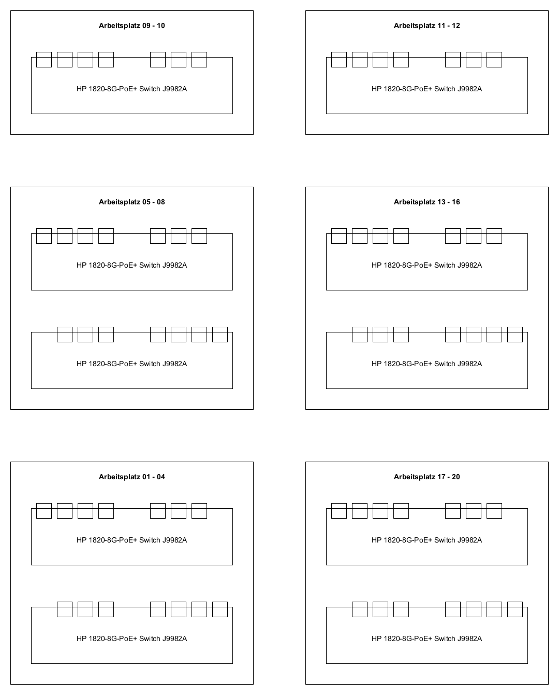
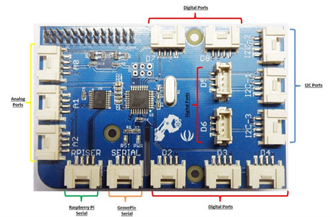
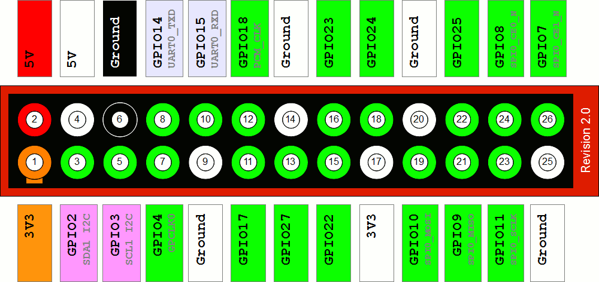

01 - Setup Laboratory¶
1. Introduction¶
This lab covers the introduction of the laboratory infrastructure. Secondly we are going to download a hard disk image and set up the Raspberry Pi with the additional GrovePi Board which is connected to some of the Raspberry Pis GPIO pins.
If all the components were set up successfully we connect some sensors and/or actuators to the GrovePi boards and see if they work as expected by executing a provided test program.
As last part of this laboratory we are going to write a simple Python script which does interact with a rotary angle sensory and two LEDs.
2. Learning Aims¶
There are no learning aims associated with this laboratory exercise.
3. Prerequisites¶
Raspberry Pi device (with MAC address labeled around the Ethernet port) 1.1 [micro]SD card with at least 8 GB capacity 1.2 Raspberry Pi Power supply
1 GrovePi board
1 rotary angle sensor
2 LEDs (colour indifferent)
1 computer (your own laptop or a lab machine) 5.1 Ethernet port
5.2 SSH client installed (ssh, PuTTY, …)
5.3 FTP client installed (Windows explorer, filezilla, Firefox, console ftp, …)
5.4 Byte level copy software (dd, cat, Win32DiskImager, …)
5.5 Zip software (7-zip, WinZip, Windows zip, …)
5.6 USB port or [micro]SD card slot
4. Getting started¶
4.1 Environment overview¶
In the rooms where the IoT laboratories take place, exists a capacity of 70 Ethernet ports which provide the ability to connect devices to the IoT subnet (172.16.32.0/24). The ports are distributed according the following illustration:

In HS2021 the IoT course is held in many different rooms (TE523, TE524, TE528). The description and the capacity may vary along the rooms, but the principle stays the same. Just use the dedicated 8 port IoT switches to connect your devices.
4.1.1 General notes about the IoT lab infrastructure¶
When booting your device and make sure that the wireless adapters are turned off and your wired Ethernet adapter is configured to obtain the IP address settings and DNS settings automatically (DHCP). Wait until your network is configured. On Windows machines this procedure may take ~ 1 minute.
If you are working with the lab machine make sure the network connection to the ZHAW LAN is disconnected. Connect the desired interface to the 8 port switch above your desks instead. Do not use your ZHAW credentials to log into the lab machine, use these credentials instead:
User: .\ktlabor
Password: KT-Praktika
To test if all the network settings work flawlessly ping the host jupiter.lab.iot and the host google.com and see if you get a reply or just start a web browser and try to open external websites.
4.2 Remote Laboratory¶
For those who want to work from home and use their home network infrastructure to work on the laboratories, the Raspberry Pi disk image is also available through a public switch drive link: https://drive.switch.ch/index.php/s/7xvYDcOV0ZzNuxg
When working in your own network infrastructure, the only prerequisite which is recommended is a DHCP server. As of today such a DHCP server application is often already embedded on your internet router at home. To obtain which IP address was given to which MAC address (the one written on the Raspberry Pi case), just consult the current leases of your DHCP server or use the program nmap to scan your private subnet for which hosts are currently up,
e.g.:
nmap -sP 192.168.1.0/24
4.3 Preparing the hard disk image¶
4.3.1 Download the hard disk image¶
Connect your device (laptop, lab machine, …) to a switch above your desks (as mentioned earlier).
Now, the hard disk image can be downloaded. Open a FTP client of your choice and connect with the following credentials:
Server/Host: jupiter.lab.iot (ftp://jupiter.lab.iot)
User: iotro
Password: iotro
The hard disk image can be found on the FTP server at the location:
/shared/IoT/p1
Download the file iot1_rpi_hs2021.img.zip and store it somewhere on your machine.
Time to take a break. If connected via 1 Gbit/s, the download will last at most 3 minutes.
4.3.2 Copying the image onto the [micro]SD card¶
First unzip the file to have the raw disk image iot1_rpi_hs2021.img
Once downloaded and unzipped, the hard disk image can now be copied to a [micro]SD card.
On Windows systems this can be reached via the software Win32DiskImager: http://sourceforge.net/projects/win32diskimager/
On unixoid systems for example the dd program can be used:
sudo dd if=/path/to/your/iot1_rpi_hs2021.img of=/dev/sdX bs=7800000 count=1000
(The image has the exact size of 7800000000 Bytes), /dev/sdX is your [micro]SD card device.
4.4 Assemblage of the Raspberry Pi¶
4.4.1 GrovePi module¶
The GrovePi module is a extension board for your Raspberry Pi. It extends your Raspberry Pi with the following easy to use input/output pins:

3 x analogue input A[0-2]. Measures the voltage of the signal at the input pin and converts the voltage level to an integer value ranging from 0 to 1023.
The analogue pins can also be used for digital IO if needed:
A0 → D14, A1 → D15, A2 → D16
7 x digital input/output D[2-8]. Simple digital IO can have a value of 0 or 1 (0V or 5V).
The three IO pins D[3,5,6] can also be used to output a PWM signal e.g. to dim an LED:
Use the function analogWrite() with an value ranging from 0 to 255 to use this functionality.
The pins are normally in input mode so your peripherals will not be damaged. Change the pin mode to output with the function pinMode(MODE), where MODE is “INPUT”/”OUTPUT”.
Remember to turn off the output on your pins before exiting your program.
3 x I2C I2C[-1,-2,-3] to connect more advanced peripherals like a LCD display.
4.4.2 Assemblage¶
Look at the MAC address which is labelled on the Ethernet/USB port of the Raspberry Pi and write down the corresponding IP address. The IP address is used later to access and control the Raspberry Pi. To get the corresponding IP address consult the document “mapping_HW_to_IP_addresses.pdf” which is provided with the IoT laboratories.
Mount the GrovePi board onto the GPIO pins of the Raspberry Pi.
Pin no. 1 of the GrovePi board has to be connected to pin no. 1 of the Rasbperry Pi and so on …
The pin numbers of the GrovePi board are printed directly on the board, the pin numbers of the different Raspberry Pi models are depicted below (View: Pins on top left, USB/Ethernet ports towards right):
Pi 1 Model A/B (Revision 2.0)

Pi 1 Model B+

Pi 2 Model B / Pi 3 Model B+

Insert the [micro]SD card into the slot of the Raspberry Pi.
Connect the Ethernet port of the Raspberry Pi to a switch in the IoT subnet.
Connect a LED to the pin D5 of the GrovePi Board.
Connect a rotary angle sensor (potentiometer) to the analogue port A0.
Power on (just plug in the power supply) the Raspberry Pi and wait around 20 seconds until it has finished its boot procedure.
Try to login to the Raspbian operating system (a debian GNU/Linux derivative) which is now running on the Raspberry Pi. Use a SSH client of your choice (ssh, PuTTY, …) and connect to the IP address you wrote down earlier in this laboratory.
Credentials:
User: pi
Password: raspberry
4.4.3 Firmware upgrade of the Grove Pi hat¶
After successfully logging into the raspbian operating system for the first time, the firmware which runs on the Grove Pi hat should be upgraded in order to work properly in combination with the Python grovepi library that is going to be used during this course.
To upgrade the Grove Pi firmware, make sure the Grove Pi hat is correctly connected to your Raspberry Pi and run the following commands on the raspbian console:
cd repos/GrovePi/Firmware/
sudo bash firmware_update.sh
When you get prompted: “Do you want to update the firmware?”, confirm this by pressing y and by pressing any key to start the firmware upgrade.
Look at the two LEDs on the GrovePi board (labeled with RST and PWR). The PWR LED should light up green constantly and the RST LED should stay dark (switched off).
Known Issue (only on Raspberry Pi 1 Model B)¶
On the Raspberry Pi 1 Model B it was noticed that some of the devices had turned on the RST LED in red constantly right after plugging in the power source. In this case the connection to the GrovePi board was not getting established properly and all of the test programs will fail until the following workaround is applied. After a successful login to the Raspbian operating systems, invoke the following two commands:
Set the pin configuration via avrdude:
sudo avrdude -c gpio -p m328p
To ensure the configuration works as expected on the operating system, reboot the machine:
sudo reboot
After the avrdude command, the RST LED should switch off and only the PWR LED should light up green constantly.
5. Execute a first test application¶
If the login attempt was successful, the current working directory is the user home of the user pi (/home/pi). In the directory /home/pi/repos/GrovePi you will find the cloned software repository which contains all the necessary pieces of software to run the GrovePi board on the Raspberry Pi, including API’s, libraries, firmware updates, installation scripts, test programs, …
5.1 Launch application¶
With all the stuff connected to the Grove Pi board we will now check if the current hardware setup is working correctly:
Navigate back to the pi user’s home directory
cd
Change working directory
cd repos/GrovePi/Software/Python
run the rotary angle sensor demo
python3 grove_rotary_angle_sensor.py
You should now be able to change the intensity of the LED by twisting the potentiometer.
The program can be terminated by pressing Ctrl + C
5.2 Study the source code¶
Open the file grove_rotary_angle_sensor.py with a cli editor (nano, vim, emacs, …) of your liking and see how this behavior is accomplished.
vim grove_rotary_angle_sensor.py
The correct pins are defined at the beginning.
Don’t forget to set the pin mode correctly!
Printing the sensor values will make debugging easier.
Don’t forget to sleep or only do something if the value has changed.
Catch IO-Errors
Disable the output on exit (KeyboardInterrupt).
Set all the output pins to 0.
For every module there is an easy example in this Software folder. If you are not sure how to use a sensor/peripheral, check these examples!
5.3 Brief information about Python¶
The libraries/APIs are entirely written in Python. The code should be easy to read respectively to understand. If you have never used Python before, there are some hints and issues to keep in mind:
Python is whitespace sensitive. All the code that belongs to the same block has to be intended exactly the same. (spaces and tabs are different). It is recommended that you configure your editor to use an amount of blanks (e.g. 2 or 4) instead of tab characters, when the tab key is pressed. (The vim on your previously installed hard disk image is already configured like this.)
There are no brackets for code blocks, only indentation.
There is no end of line character except if a new block is starting (e.g. after a while/if, etc. statement) there is a colon (:).
There is no switch case statement in Python.
6. Write a simple Python application for the GrovePi board¶
As we had a quick overview of an example regarding how to programmatically interact with the GrovePi board, it is time now for your first GrovePi Project. We won’t use any IoT protocols yet. We just want to familiarize with the GrovePi module.
6.1 GrovePi board setup¶
We have the following hardware requirements:
2 LEDs (colour indifferent)
1 rotary angle sensor
Connect them to the GrovePi board. LEDs to digital pins and the rotary angle sensor to a analogue pin. Sometimes it works when reassembling the GrovePi board with other modules in running state but it is recommended that you halt the operating system of the Raspberry Pi (sudo halt) and pull out the power supply before modifying the hardware configuration of the GrovePi board.
6.2 Application behavior¶
The application you are going to write is just a simple LED toggler. You have 2 LEDs which are alternating their on/off state. The alternating speed of the LED states can be modified by twisting the rotary angle sensor.
LED0 |
LED1 |
Remarks |
|---|---|---|
1 |
0 |
initial state |
0 |
1 |
|
1 |
0 |
|
0 |
1 |
|
… |
… |
The rotary angle sensor has a resolution of 1024 nuances. We want a maximum toggling interval of 2400 milliseconds.
We choose a minimum toggling interval of 200 milliseconds and a step size of 200 milliseconds. → 2400 ms / 200 ms = 12 different toggling intervals. Figure out how to map these time steps to the raw values of the rotary angle sensor.
Hint: Avoid calculations and comparisons with floating point numbers. Try to do the arithmetic with integer numbers as far as possible.
Annexed to this laboratory description is a code template which should serve you as starting point. The template is based on a trivial implementation of the core logic. If you are already a Python expert (or even a Pythonista) with advanced skills, you are absolutely free to implement this application in a more sophisticated manner like using Pythons multiprocessing libraries or the concept of coroutines (asyncio, …).
7. Grading¶
4 points maximum will be awarded for completion of the exercises.
8. Annex¶
8.1 Edit the source files on the development machine (not directly on the Raspberry Pi)¶
If you do not like console text editors and want to edit the sources of your applications in a GUI editor on your development machine, this can be made possible by installing a SMB (Server Message Block protocol) Server on the Raspberry Pi and sharing the directory /home/pi out to the network: The installation of the samba server is already done on the disk image. The grayed out text can be skipped.
Install the samba server
sudo apt-get install samba
Edit the configuration file (/etc/samba/smb.conf) of the samba server in the “share definitions” section as follows (Example:
sudo vim /etc/samba/smb.conf):~ line 189: browseable = yes
~ line 193: read only = no
Add the user pi to sambas user management:
sudo smbpasswd -a piset the password to: raspberry
Restart the daemons:
sudo service smbd restartsudo service nmbd restart
This configuration is only a stone’s throw away from the default samba configuration and shares only the pi users home directory (/home/pi) but that should be sufficient for now. If needed, feel free to configure the samba server according your advanced requirements.
You should now be able to access the shared folder from your development machine:
Windows:
Address: \<ip.of.raspberry.pi>\pi
Credentials: User: .\pi, Password: raspberry
Unixoid Systems:
Address: smb://<ip.of.raspberry.pi>/pi
Credentials: User: pi, Password: raspberry, Workgroup: leave as it is
On Linux systems a smb client is required but as experience teaches this client comes already with a base system installation in most of the distributions.